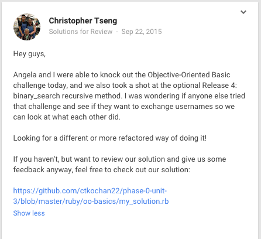

Good Questions:
Setting Yourself Up for a Reply
Culture Blog
September 24, 2015
People on a daily basis are flooded with questions and comments, whether in person or over email & text. Instant messaging has become so frequent and inherent in our lives that we have learned for our own sanity, how to filter and phase out a bulk of those messages. Although we mostly block out irrelevant messages like spam, our ingrained propensity to phase out messages sometimes includes important and relevant information. Usually our filter picks those messages up, but naturally, with the excess of stimulation, some fall through the cracks. And unless you are someone’s superior or included in a small, close circle of family and friends, it is up to the sender to make sure that their questions or messages are written in the best way to be caught by the filter and not placed in an actual spam folder or a mental one.
If there was anything I have learned from sending emails to friends, reports to colleagues, and posting questions on the Dev Bootcamp Google+ community, is that the layout and the first 10 words are the most important aspects to getting people to read your message.
A good message summarizes the question/inquiry/ message in one sentence at the top. David Ogilvy, a icon in advertising, said that the best headlines of an ad are usually shorter than 10 words. Of course, people take our questions and messages more seriously than a print ad in a magazine, but the thought carries over. A message that has a short summary is more likely to be read which will give the reader and idea of whether to filter this out or read more into it. I did not do a good job at this when posting on the community about sharing solutions for a particular problem. Instead of including a header at the top like “Solution Review for Ruby Challenge Object Oriented Basics,” I forced readers to first read a paragraph before understanding what I wanted. A bulk of the readership probably fell off before they even completed the paragraph.
A good message has all the components readily available. Readers often decide whether to reply based on two things, how interested they are and how much work goes into replying. Easy way to do this is to limit the amount of steps it takes to reply. Include all of the links or attachments. Provide a clear step by step process on what you need. And try to provide all the information in the message so they don’t have to search for it elsewhere.
In the end, it also comes down to luck. What mood people are in when they read your message. Or how many other emails did they receive that day. However, if you have a clear header/subject, have clear and easy to read formatting, and provide all the information they need to reply, you are helping your chances.